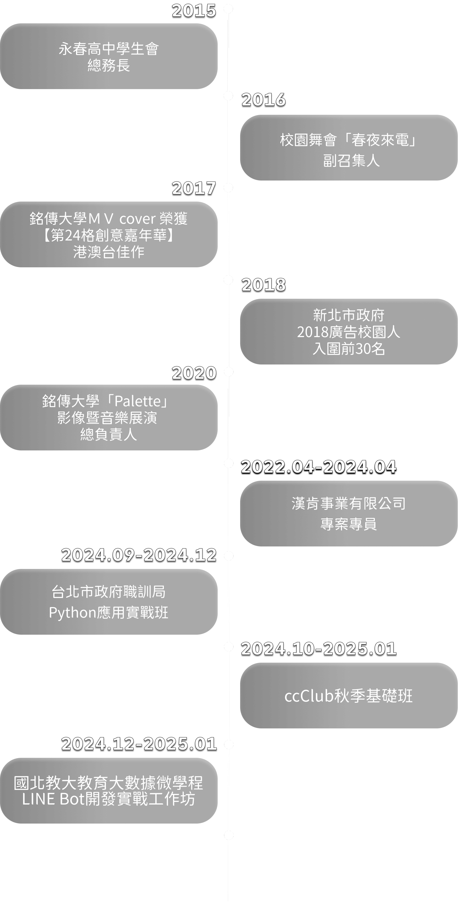

about ME
我是Joy，26歲，畢業於銘傳大學廣播電視學系。學生時期，我活躍於活動企劃與影像製作領域，曾策劃多場校內外活動、展演與茶會，並以 MV Cover 作品榮獲【第24格創意嘉年華】港澳台佳作，同時入圍新北市政府廣告校園人前 30 名。這些經歷讓我培養了豐富的內容製作能力與美感敏銳度，也養成了以故事性與視覺思維打造作品的習慣。
畢業後，我投入會展產業，擔任專案負責人，負責品牌合作協調與活動執行。在專案過程中，我不僅掌握整體進度與溝通節奏，也深度參與視覺設計各環節。無論是平面設計或 3D 展示設計，我經常與設計師密切協作，亦曾多次親自進行排版調整與視覺發想，從主視覺架構、色彩配置到印刷輸出規格皆不陌生。這些經驗讓我養成了將「設計思維」融入專案邏輯的能力，並在多變的角色中靈活切換，累積了豐富的整合與視覺統籌實戰經驗，也讓我更加確立對「設計」與「使用者體驗」的熱情。
為了更深入理解數位技術的應用與可能性，我選擇踏上工程師的轉職之路。自學期間，我從基礎的 Python 入門，實作了簡單的資料爬蟲與模型預測，並以 Flask 嘗試將資料視覺化呈現在網頁上。雖尚未完全熟練，但這段實作歷程讓我更具備系統思維，也激發了我持續進修與深化技術的動力。後續我亦參與 LINE Bot 開發課程，將基礎後端邏輯整合至台灣使用率最高的社群平台中，實際應用於使用者互動情境。
我相信，美感不僅是視覺吸引，更是一種對細節與結構的理解；而網頁開發，正是將這些感知轉化為清晰、有邏輯、並具情感連結的介面。我期許自己成為一位兼具設計思維與全端實作能力的工程師，獨立完成從介面設計到功能開發的完整流程，持續打造有溫度、重視體驗的數位產品。

EXPERIENCE

PROJECTS
Exhibition
Symposium
&
Webinar
Calendar
System
回診小幫手
寵物登記數據
統計表
寵物登記數據
預測工具
tools
VScode CSS HTML
Javascript jQuery
Flask
Mysql MongoDB
ngork Linebot
Premiere Finalcut
Adobe illustrator
Notion Asana Figma